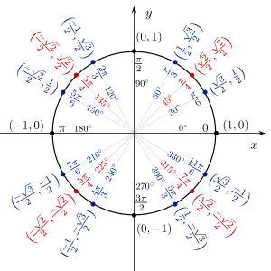
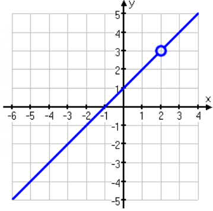
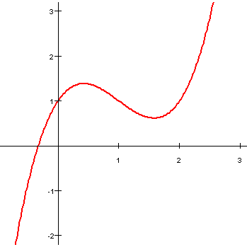

Unit Circle
The Unit Circle is from trigonometry, it is essential to remember it in future problems and the AP test.

Mr. Ross
Mr. Williamson
Mr. Ortega
Alec G
Rick H
Susie Q
Yifan Y
The Unit Circle is from trigonometry, it is essential to remember it in future problems and the AP test.

A limit is a y-value which a function approaches as x aproaches some value.
lim x→e f(x) = L means as x approaches e, f(x) approaches the y-value of L.
For example, f(2) of the graph will be undefined. But the limit will
be equal to 3.

If a function is a piece-wise function like the graph, then limit at the jump would be undefined because two holes are made. At this point, only one sided limit could give us valid answer.
For example, lim x→3- f(x) = 2
A continuous function means you can draw this function on a graph without lifting pencil. For example, the function of this graph is continuous function.
To verify a function on continuity, check lim x→a f(x) = f(a)
